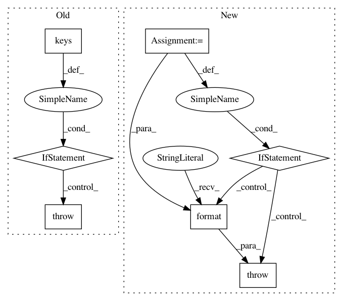

dc803671a48a3c8f0dc74221478314257b0c9c61,pgmpy/models/MarkovChain.py,MarkovChain,_check_state,#MarkovChain#Any#,92
Before Change
if not isinstance(state, dict):
raise ValueError("Start state must be a dict.")
if not set(state.keys()) == set(self.transition_models.keys()):
raise ValueError("Start state must represent a complete assignment to all variables.")
for var, val in state.items():
if val >= self.cardinalities[var]:
raise ValueError("Assignment {val} to {var} invalid.".format(val=val, var=var))
return True
After Change
if not hasattr(state, "__iter__"):
raise ValueError("Start state must be a iterable object.")
state_vars = {s.var for s in state}
model_vars = set(self.transition_models.keys())
if not state_vars == model_vars:
raise ValueError("Start state must represent a complete assignment to all variables."
"Expected variables in state: {svar}, Got: {mvar}.".format(svar=state_vars,
mvar=model_vars))
for var, val in state:
if val >= self.cardinalities[var]:
raise ValueError("Assignment {val} to {var} invalid.".format(val=val, var=var))
return True
In pattern: SUPERPATTERN
Frequency: 3
Non-data size: 7
Instances
Project Name: pgmpy/pgmpy
Commit Name: dc803671a48a3c8f0dc74221478314257b0c9c61
Time: 2015-08-15
Author: pratyaksh@me.com
File Name: pgmpy/models/MarkovChain.py
Class Name: MarkovChain
Method Name: _check_state
Project Name: KaiyangZhou/deep-person-reid
Commit Name: 3cbeab42c246425425c584cd53f1cc25d8c738a7
Time: 2019-03-15
Author: k.zhou@qmul.ac.uk
File Name: torchreid/datasets/__init__.py
Class Name:
Method Name: init_imgreid_dataset
Project Name: KaiyangZhou/deep-person-reid
Commit Name: 3cbeab42c246425425c584cd53f1cc25d8c738a7
Time: 2019-03-15
Author: k.zhou@qmul.ac.uk
File Name: torchreid/datasets/__init__.py
Class Name:
Method Name: init_vidreid_dataset